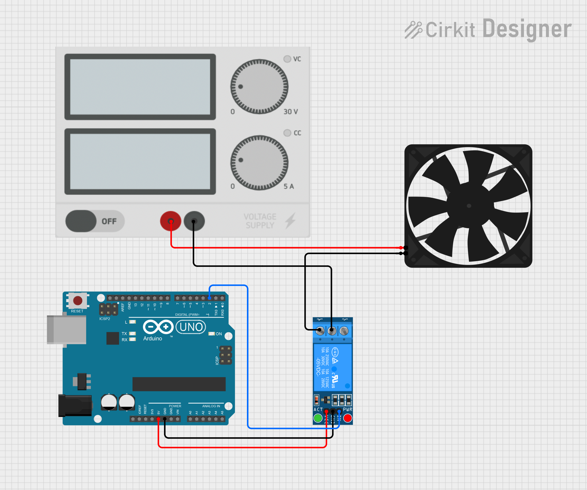

# microcontroller programming
# ---------------------------------
in class, we learnt how to use a switch with an led to switch it on and off using a microcontroller, which was a cool skill to learn!

/week 4
# microcontroller programming
# ---------------------------------
in class, we learnt how to use a switch with an led to switch it on and off using a microcontroller, which was a cool skill to learn!
# arduino
# ---------------------------------
i programmed an arduino to control all the components of my main circuit for my final project. i had two circuits - one that used 4 SRD-05VDC-SL-C relays to switch on an aerial fan, the two fans on my exchangers, and a heater.

the other circuit was to collect data from 6 DHT-22 sensors.

i wrote some basic code to check that the relays could switch their loads on and off, and the arduino could read the sensor readings. here is the loop function in the code that i used:
Serial.println("Turning all relays ON");
digitalWrite(relayPin1, LOW);
digitalWrite(relayPin2, LOW);
digitalWrite(relayPin3, LOW);
digitalWrite(relayPin4, LOW);
delay(4000);
Serial.println("Turning all relays OFF");
digitalWrite(relayPin1, HIGH);
digitalWrite(relayPin2, HIGH);
digitalWrite(relayPin3, HIGH);
digitalWrite(relayPin4, HIGH);
delay(4000);
// Sensor readings
printSensorData("Sensor1", dht1);
printSensorData("Sensor2", dht2);
printSensorData("Sensor3", dht3);
printSensorData("Sensor4", dht4);
printSensorData("Sensor5", dht5);
printSensorData("Sensor6", dht6);
delay(2000);
this is the function i used to print the sensor data:
void printSensorData(const char* label, DHT &sensor) {
float h = sensor.readHumidity();
float t = sensor.readTemperature();
if (isnan(h) || isnan(t)) {
Serial.print(label);
Serial.println(": Failed to read");
} else {
Serial.print(label);
Serial.print(": ");
Serial.print(t);
Serial.print(" °C, ");
Serial.print(h);
Serial.println(" %");
}
}
since my model was in my lab, and not at the makerspace (and it wouldn't have fit in the photobooth), here is a short video showing the fans switching on and off due to the relays.